RDR2 세션 관리자 사용 가이드
프로그램의 각종 세션 방식과 활용 방법을 알기 쉽게 정리한 초보자용 매뉴얼입니다.
프로그램의 각종 세션 방식과 활용 방법을 알기 쉽게 정리한 초보자용 매뉴얼입니다.
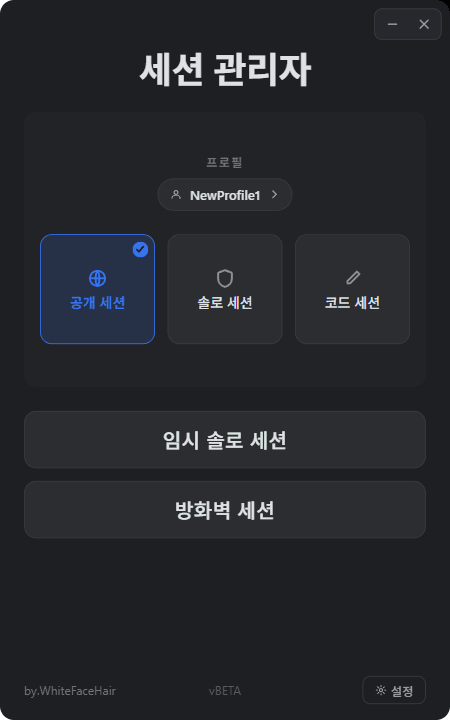
| 구분 | 세션 종류 | 상세 특징 및 설명 | 게임 재실행 여부 |
|---|---|---|---|
| 모드 세션 (게임 모드 적용) |
공개 세션 | 순정 상태의 일반 세션입니다. 모든 유저들과 만납니다. | 필수 (전환 후 게임 껐다 켜기) |
| 솔로 세션 | 나 혼자만 접속할 수 있는 나만의 방을 만듭니다. | ||
| 코드 세션 | 사용자가 입력한 코드를 공유한 지인들끼리만 같은 세션에서 만납니다. | ||
| 비모드 세션 (네트워크 제어) |
임시 솔로 세션 | 인터넷 선을 약 10초간 뽑았다 끼는 것과 같은 임시 솔세(솔세주작기)입니다. 시간이 지나면 다른 사람이 점차 들어옵니다. | 불필요 (게임 중 즉각 적용) |
| 방화벽 세션 | 윈도우 방화벽 규칙을 동적으로 제어하여 지속적인 솔로 플레이가 가능하며, 지정한 IP만 통신을 허용해 줄 수 있습니다. |
프로그램 메인 화면에서 우측 하단의 [프로필 추가] 버튼을 누릅니다.
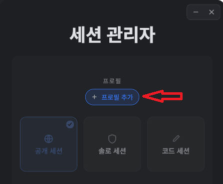
게임을 실행해 두면 프로그램이 자동으로 경로를 읽어 '감지됨'으로 표시됩니다.
수동으로 지정해야 한다면, [찾아보기]를 눌러 스팀 또는 에픽게임즈의 최상위 게임 폴더인 Red Dead Redemption 2 폴더를 직접 선택해 주십시오.
구매 플랫폼 설정 칸을 클릭하여 본인의 상황에 알맞은 플랫폼 형식을 클릭합니다.
* 스팀 일반(스토리 모드 보유): 스팀 - RDR2
* 스팀 온라인 단품(스토리 모드 없음): 스팀 - RDO
* 에픽게임즈 및 락스타 게임 런처 역시 각각의 알맞은 에디션 버전을 선택해 줍니다. (구분이 어렵다면 기본값으로 두셔도 괜찮습니다.)
모든 경로 및 설정 설정을 완료했다면 하단의 빨간색 [저장] 버튼을 누릅니다.
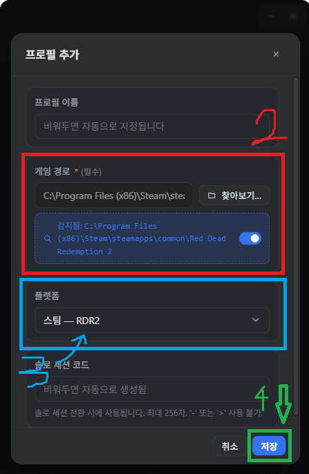
저장이 끝나면 아래 이미지와 같이 사용 중인 프로필 목록에 성공적으로 등록된 모습을 볼 수 있습니다.
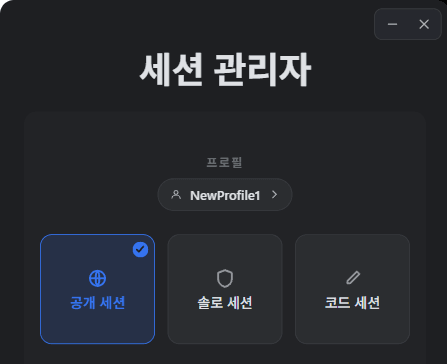
프로그램 메인 인터페이스 하단에 있는 [설정](톱니바퀴 아이콘) 버튼을 누릅니다.
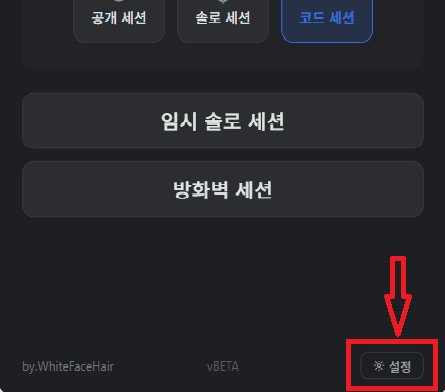
설정창 상단 탭에서 [임시 솔로 세션]을 누른 뒤, 하단의 [단축키 설정] 버튼을 누릅니다.
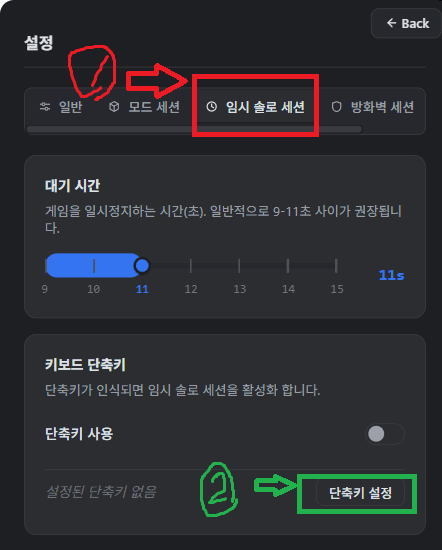
단축키 입력 대화창이 열렸을 때 키보드에서 동시에 사용할 키 조합을 누릅니다. (예: Ctrl + Space)
키를 누른 후 창이 닫히며 등록이 완료됩니다. 취소하려면 키보드에서 ESC를 누릅니다.
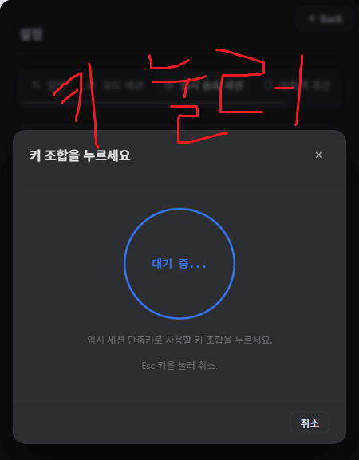
키 지정 완료 후 반드시 우측의 토글 스위치 버튼을 눌러 파란색(ON) 상태로 활성화해 줍니다.
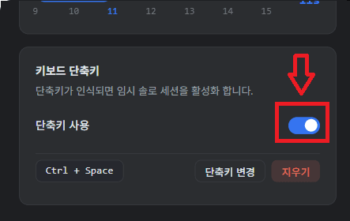
프로그램 메인 화면에서 [코드 세션] 탭을 클릭해 들어갑니다.
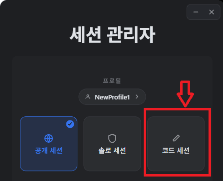
코드 세션 입력란 오른쪽에 있는 [매크로 활성화] 버튼을 누릅니다.
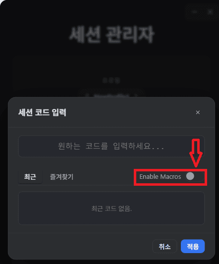
하단의 빌더 버튼을 누르거나 직접 텍스트란에 작성합니다.
예를 들어 rdr2%day% 로 등록하면, 오늘이 19일인 경우 자동으로 실시간 매크로가 반영되어 rdr219 가 최종 코드로 대입됩니다.
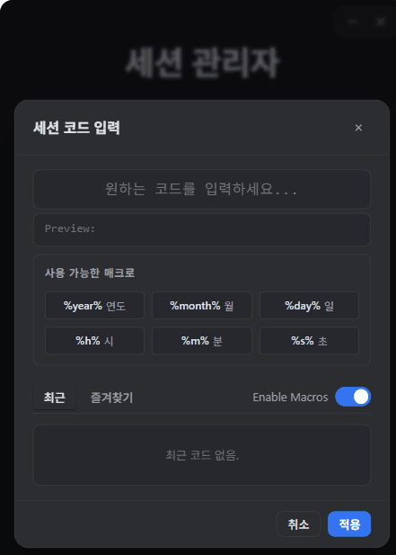
하단의 **[적용]** 버튼을 클릭하면 패스워드 설정 값이 바로 코드 세션에 적용됩니다.
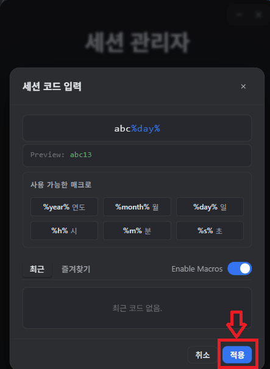
A. 솔로/코드 세션과 같은 모드 세션 방식은 **전환 완료 후 게임을 완전히 종료하고 다시 실행**하셔야 모드가 적용됩니다. 이미 실행 중인 게임에는 즉시 반영되지 않습니다.
또한, 프로그램이 락스타 폴더 내에 정상적으로 모드 파일을 쓰기 위해 프로그램을 **[관리자 권한으로 실행]**하여 다시 전환해 보십시오.
A. 이 프로그램의 기반이 되는 솔로 세션 모드 자체는 2019년 출시 초기부터 대다수 유저들이 안정적으로 사용해 왔으며 아직까지 밴 사례는 보고되지 않았습니다.
소셜 클럽의 경고 문구는 모드 파일이 게임 디렉터리에 들어가 있으면 자동으로 감지하여 띄우는 정상적인 현상입니다. 하지만 락스타 정책 변경으로 제재가 발생할 수도 있으니 100% 무해한 프로그램이란 건 없으며, 사용 판단과 책임은 사용자 본인에게 있습니다.
A1. 모드 세션의 코드는 대소문자와 띄어쓰기(공백)까지 완벽하게 일치해야 같은 방으로 들어갑니다. 대소문자를 구분했는지 다시 한번 확인해 주십시오.
A2. 소셜 클럽 오버레이창(게임 중 키보드 HOME 키 클릭)을 열고, 친구 목록 프로필을 클릭한 뒤 직접 [세션 참가] 또는 [초대하기] 기능을 사용하여 세션을 맞추어 보십시오.
A. 해당 주장은 사실과 다르며, 이 모드가 아닌 실제로 멀티 해킹 툴(모드 메뉴)을 사용했거나 무고 밴 웨이브에 휩쓸린 경우일 확률이 큽니다.
제작자는 본 게임 보조 프로그램을 5년 이상 테스트 및 실사용하면서 단 한 번도 정지를 당한 사례가 없습니다.
A. 가능합니다. 다운로드 받으신 zip 압축 파일 내부를 보면 mods 폴더가 있습니다. 그 안의 모드 파일들을 텍스트 에디터로 수정해 수동으로 게임 최상위 설치 폴더 경로에 복사해 넣어 주셔도 세션 전환이 가능합니다.
A. 스팀덱 게이밍 모드에서도 실행되도록 파일 처리를 설계하고 있으나, 현재 제작자가 기기를 보유하고 있지 않아 적극적인 테스트가 불가능한 상황입니다.
스팀덱 사용 경험이 있고 테스트에 동참해 주실 의향이 있으신 분들은 본문에 표기된 피드백 메일로 연락주시면 대단히 감사하겠습니다.